Experiment: a 3D world as ground truth
Can a Blender scene fix the place, the camera and her body, so the video model only adds the look? Built on Lightricks' Layout-To-Render add-on for their LTX-2.5 video model. Noble Hunt's ruined room, 26–28 Oct
In
- A room built by script
- Her body + a motion clip
- Her photo
The pipeline that came out of it
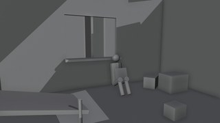
1 the room in Blender2 flat-colour layout
→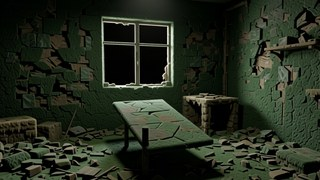
3 styled training view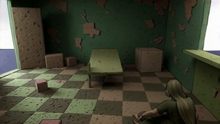
4 LTX + world LoRA- Build the room and two camera moves (A in by the door; B back from the window), and her body, dressed like her and moved by a motion-capture clipBlender by script + MakeHuman + CMU motion capture
- Render the layout in flat colours, one per kind of thing (the Matrix-Game 4.0 idea)Blender
- Restyle 80 views into the felt world; keep the 58 that match their layoutImage editing model (Qwen-Image-Edit 2511)
- Train a world add-on (LoRA) on those pairsLightricks' LTX-2 trainer, starting from their Layout-To-Render add-on: 197 min on a Spark
- Render each shot from the layout video and the LoRA; put her face into the first frameLightricks LTX-2.5 + Layout-To-Render (an IC-LoRA); face pass
What was tried, in order
- ✓ worked
The video follows the 3D layoutLightricks' Layout-To-Render takes a plain 3D render as the shot's motion: camera and geometry followed frame by frame, no reinvented room, no walk-and-rewind (rounds 1, 4b).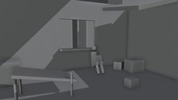
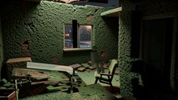
layout · LTX - ✗ failed
Styled stills pinned as the lookEach still was styled on its own, so each shot was a different room; the stand-in became a toy soldier (rounds 1–3).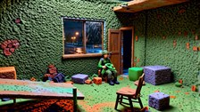
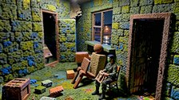
shot A · shot B - ✗ failed
Painting the look onto the 3D roomTextures projected from styled views streaked and became a patchwork: “a comically incoherent mess” (rounds 4–5).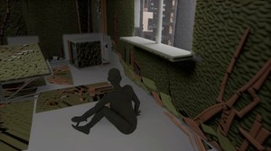
- ✗ failed
Wan VACE as the rendererNo figure at all, just a flat silhouette, at a lower resolution.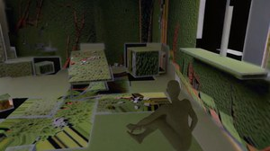
- ✗ failed
Flat colours, no trainingLTX copies the flat colours literally: green walls, a brown floor. The look has to come from training.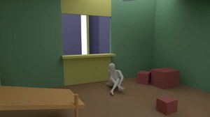
- ✗ failed
A reference sheet (Lightricks' Ingredients add-on)No effect on the room; the uniform sheet turned her dark-haired. - ◐ partly
A dressed, motion-captured bodyHer figure (hair, clothes, pose, motion) from front and back, but a slightly CG woman, not her face.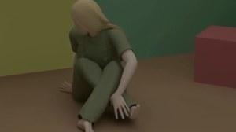
- ✓ worked
A world LoRA trained on one roomThe two camera moves show the same felt room: the first time two shots matched. 58 pairs, ~3 hours.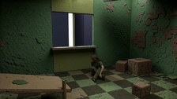
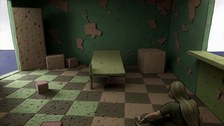
shot A · shot B - ✗ failed
Keeping her face in the videoHer at frame 0 (0.61 like her photo; pinned frames face-passed to 0.87–0.89), but redrawn as a similar woman within 8–32 frames: 0.26–0.33.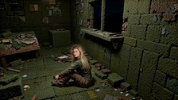
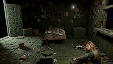
frame 0 · 1.7 s
VerdictThe 3D scene works as ground truth for the place and the camera, and a world LoRA gives it a look that holds from shot to shot. The singer's face doesn't hold: the video model redraws her within a second.
Next (untested)
- Close shots for identity (D28): the same clip with her face ≥ 200 px wide. Is a small face the cause?
- Her 3D mesh through LTX: built from one photo (TRELLIS.2), never rendered in the room.
- Train her into the world LoRA, with restyled targets that keep her blond.
- Across a real cut: many shots and places, not two moves through one room.
Hardware
Blender (in a container)
processor · 76 s for both clay passes
Any machine.
World LoRA training (LTX-2.5 22B)
peak 50 GB · 197 min for 1,500 steps (DGX Spark)
Needs a 128 GB unified-memory machine.
Video model + LoRA
as task 7 · ~5 min per 81-frame clip (DGX Spark)
As task 7.
Report: docs/reports/20261108-3d-ground-truths.md